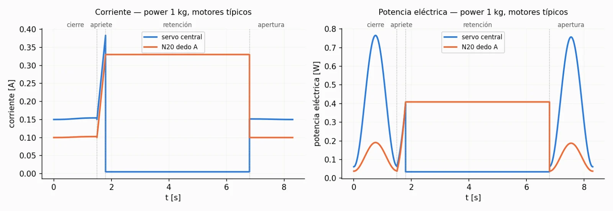

Sinfín m1 → z30
30 : 1
Del servo central a cada rueda. Se autobloquea (λ = 3.6°), así que los MCP se sostienen sin consumo.
Gripper robótico para UR5e
Diseño de detalle del gripper V2.4: estática en tres vistas, cinemática y dinámica completas, y validación contra Working Model 2D en 180 configuraciones.

Render generado con IA a partir del ensamble CAD del gripper V2.4.
Arquitectura
El servo central mueve un sinfín de módulo 1 que, a través de un par z20, acciona las tres ruedas z30 y los piñones z12 de las articulaciones MCP. Cada dedo lleva además un motor N20 en la falange proximal que mueve su PIP con un sinfín de cuatro entradas.

30 : 1
Del servo central a cada rueda. Se autobloquea (λ = 3.6°), así que los MCP se sostienen sin consumo.
1 : 1
Reparte el giro del servo a los sinfines de los dedos B y C e invierte el sentido.
1 : 2.5
Rueda a piñón del MCP. Junto con el sinfín da 12 : 1 idéntico en las tres ramas.
4 : 1
Motor N20 a la articulación PIP. Con cuatro entradas no se autobloquea y retrocede bajo carga.
Solo el servo. θMCP,A = θMCP,B = θMCP,C exactamente.
Servo bloqueado por el sinfín. Cada N20 mueve solo su PIP.
El servo fija la apertura y cada N20 corrige la carga de su dedo.
3.1 · Cálculos estáticos
Fuerzas, torques y reacciones con las coordenadas reales de los puntos de contacto P, D y T, para 20 posturas, tres contactos, cuatro masas, tres coeficientes de fricción y cuatro eficiencias.


| Masa | Pinch μ 0.3 | Pinch μ 0.5 | Pinch μ 0.7 | Power μ 0.5 |
|---|---|---|---|---|
| 1 kg | 16.35 N | 9.81 N | 7.01 N | 6.54 N |
| 2 kg | 32.70 N | 19.62 N | 14.01 N | 13.08 N |
| 3 kg | 49.05 N | 29.43 N | 21.02 N | 19.62 N |
| 4 kg | 65.40 N | 39.24 N | 28.03 N | 26.16 N |
| Magnitud | Máximo |
|---|---|
| Motor central | 1.945 N·m |
| Motor de dedo (N20) | 1.233 N·m |
| Torque MCP | 5.832 N·m |
| Torque PIP | 2.466 N·m |
| Fuerza de contacto | 68.3 N |
| Tangencial en el piñón z12 | 972 N |
Pinch en la punta, 4 kg, μ 0.3, dedos casi rectos, η 50 %.
3.3 · Cálculos cinemáticos
Cierre cicloidal de 0° a 60° en el MCP y de 0° a 45° en el PIP en un segundo, con velocidad y aceleración nulas en los extremos. Velocidades con el Jacobiano del dedo; aceleraciones con su derivada.


| Punto / elemento | Desplazamiento | Recorrido | Velocidad máx. | Aceleración máx. |
|---|---|---|---|---|
| Contacto P | 33.6 mm | 35.2 mm | 0.070 m/s | 0.225 m/s² |
| Contacto D | 81.8 mm | 88.7 mm | 0.179 m/s | 0.595 m/s² |
| Punta T | 103.3 mm | 113.4 mm | 0.229 m/s | 0.760 m/s² |
| Falange proximal (MCP) | 60° | — | 2.094 rad/s | 6.580 rad/s² |
| Falange distal (absoluta) | 105° | — | 3.665 rad/s | 11.515 rad/s² |
| Eje del sinfín central | 2 vueltas | — | 25.13 rad/s | 78.96 rad/s² |
| Sinfín del N20 | 0.5 vueltas | — | 6.283 rad/s | 19.74 rad/s² |
3.4 · Cálculos dinámicos
Ecuaciones de Lagrange con las masas e inercias del plano. La inercia del dedo pide menos de 1 mN·m; lo que dimensiona los motores es la carga del agarre y, sobre todo, la retención del PIP.
105 mW
Potencia máxima en el eje del servo al cerrar los tres dedos en vacío (η 0.6).
9.8 mJ
Energía de un cierre por dedo. El balance ∫P dt = ΔEc + ΔEp cierra con error de 10⁻¹⁴ J.
0.444 N·m
Par continuo que debe dar cada N20 para retener un pinch de 4 kg en la punta.

| Fase | Motor | Energía | Potencia máx. | Nota |
|---|---|---|---|---|
| Cierre | Servo (3 dedos) | 43.6 mJ | 105.3 mW | η 0.6 |
| Cierre | N20 (por dedo) | 1.79 mJ | 4.43 mW | η 0.6 |
| Retención | Servo | 0 | 0 | Sinfín autobloqueante |
| Retención | N20 (por dedo) | I²R·t | I²R | T = 0.444 N·m (pinch 4 kg); ver consumo eléctrico |
| Apertura | Servo (3 dedos) | 15.6 mJ | 37.7 mW | Vence el autobloqueo |
| Apertura | N20 | 0 | 0 | Sinfín reversible |
| Ciclo | Servo / 3 N20 | 59.2 / 5.4 mJ | Energía mecánica en los ejes |
Resultado clave
| Caso | Energía por ciclo | Potencia media | N20 típico (298:1) |
|---|---|---|---|
| Power 1 kg | 6.4 J | 0.77 W | ✓ Continuo |
| Power 4 kg | 34.4 J | 4.14 W | △ Solo picos cortos |
| Pinch 1 kg | 13.5 J | 1.62 W | ✓ Continuo |
| Pinch 4 kg | 128 J | 15.45 W | ✕ No viable necesita 0.444 N·m, por encima de su par de bloqueo de 0.39 N·m |
Ciclo de 8.3 s: cierre 1.5 s, apriete 0.3 s, retención 5 s y apertura 1.5 s, con motores típicos de catálogo.
El plano no define los motores. Se usan datos típicos de catálogo: servo digital de 20 kg·cm (clase DS3218, rotación continua, 6.8 V, 111 rpm, bloqueo 1.96 N·m / 2.5 A) y N20 6 V 298:1 (100 rpm, bloqueo 0.39 N·m / 1.6 A). Modelo DC lineal I = I₀ + T/Kt, P = (IR + Keω)·I. Ciclo: cierre 1.5 s, apriete 0.3 s, retención 5 s, apertura 1.5 s.

| Caso | I servo (apriete) | T N20 | I N20 (retención) | N20 | E ciclo | Potencia media |
|---|---|---|---|---|---|---|
| Power 1 kg | 0.38 A | 0.060 N·m | 0.33 A | Continuo | 6.4 J | 0.77 W |
| Power 4 kg | 1.07 A | 0.237 N·m | 1.01 A | Solo pico | 34.4 J | 4.14 W |
| Pinch 1 kg | 0.42 A | 0.112 N·m | 0.53 A | Continuo | 13.5 J | 1.62 W |
| Pinch 4 kg | 1.23 A | 0.444 N·m | 1.81 A | Excede | 128.2 J | 15.45 W |
El servo gasta menos de 1.9 J por ciclo porque el sinfín autobloqueante le permite apagarse al retener. Entre el 77 % y el 99 % de la energía la consumen los N20 sosteniendo el PIP; el pinch de 4 kg supera el par de bloqueo del N20 típico.
Simulador
Réplica de los dos modelos de Working Model 2D. Mueve los controles y lee los medidores; el cálculo es el mismo modelo analítico validado contra WM.
Vista lateral con el gripper hacia abajo (gravedad = +y′ del dedo). El dedo C coincide con B en esta proyección. En el agarre dinámico el cierre sigue la ley cicloidal y la sujeción se evalúa con el criterio 2μN ≥ W en el punto de contacto real.
Pruebas en Working Model
Capturas del modelo estático de Working Model 2D en cada prueba: objeto de 4 kg, μ 0.5, η 0.6, θMCP = θPIP = 15°. Los medidores de la derecha son los que se comparan con el cálculo analítico.

| Magnitud | Dedo A | Dedo B | Dedo C |
|---|
Validación
El modelo estático de Working Model recorrió pinch, power y carga desigual con contacto en P, D y T en las 20 posturas. El modelo dinámico sostuvo 1 kg desde Tcentral = 0.25 N·m y dejó caer el objeto con 0.20 N·m.


| Magnitud | Error máximo | Error medio | Casos > 5 % |
|---|---|---|---|
| Torque del motor central | 0.0009 % | 0.0002 % | 0 |
| Torques de los motores A, B, C | 0.028 % | 0.007–0.011 % | 0 |
| τMCP de los tres dedos | 0.034 % | 0.0002–0.011 % | 0 |
| τPIP de los tres dedos | 0.034 % | 0.010–0.017 % | 0 |
| Reacciones MCP y PIP | 0.034 % | 0.0002–0.011 % | 0 |
Gráficas


Datos de entrada, modelos de cálculo, tablas, gráficas y validación en Working Model, en formato de entrega.
Datos faltantes del plano (motores, fricción entre dientes, ángulo de presión, masa de la palma) se trataron como parámetros.